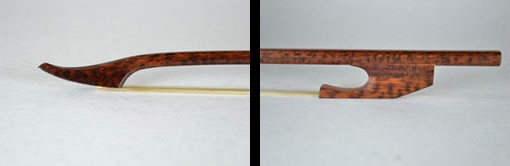
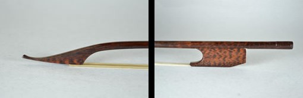
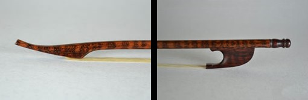
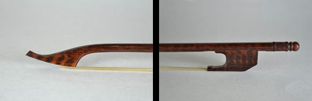
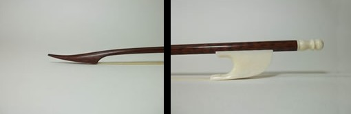

Archet Violon c.a 1730, hausse coincée.
Musée de Bales.
Poids: 55 gr.

Archet Violon anglais c.a 1720, hausse coincée.
Musée Ashmolean, Oxford.
Poids: 52 gr.

Archet Violon italien fin XVII siècle.
Poids: 50 gr.

Archet Violon francais modèle Tourte Pere milieu XVIII siècle.
Poids: 51 gr.

Archet Violon italien pour sonate, fin XVII siècle.
Poids: 48 à 50 gr.